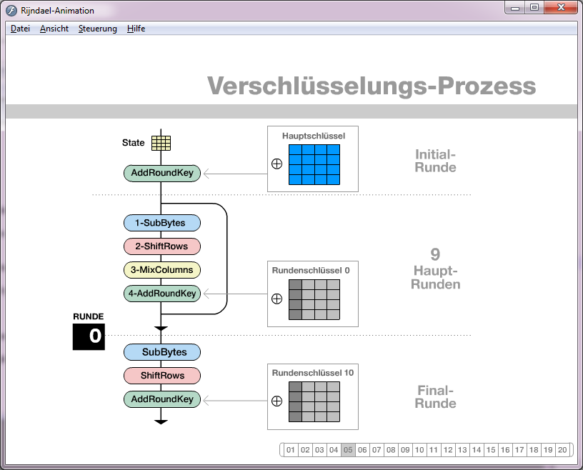

Wenn du dein Handy entsperrst, eine WhatsApp-Nachricht sendest oder eine HTTPS-Seite aufrufst, arbeitet fast immer AES im Hintergrund. Der Advanced Encryption Standard wurde 2000 nach einem öffentlichen Wettbewerb ausgewählt; er beruht auf dem Verfahren Rijndael der belgischen Kryptologen Joan Daemen und Vincent Rijmen.
Da zum Ver- und Entschlüsseln derselbe Schlüssel verwendet wird, handelt es sich um ein symmetrisches Verfahren. AES ist eine Blockchiffre: Die Daten werden in Blöcke fester Größe zerlegt, und jeder Block wird in mehreren Runden aus Substitution, Permutation und Mischen verarbeitet, die jeweils vom geheimen Schlüssel abhängen.
Ablauf der AES-Verschlüsselung
Schlüsselerweiterung: Aus dem geheimen Schlüssel werden mit einer festgelegten Funktion so viele Rundenschlüssel berechnet, wie es Runden gibt (plus einen für die Anfangsrunde).
Anfangsrunde:
AddRoundKey: Der 128-Bit-Eingabeblock wird bitweise per XOR (exklusives ODER) mit dem ersten Rundenschlüssel verknüpft.
Hauptrunden (9, 11 bzw. 13): Jede Runde besteht aus vier Operationen:
SubBytes: Jedes Byte wird über eine Tabelle (S-Box) nichtlinear ersetzt.
ShiftRows: Die Zeilen der 4×4-Matrix werden zyklisch um 0, 1, 2 bzw. 3 Stellen nach links verschoben.
MixColumns: Die vier Bytes jeder Spalte werden miteinander verrechnet und dadurch gemischt.
AddRoundKey: Der Block wird erneut per XOR mit dem Rundenschlüssel verknüpft.
Finale Runde: wie eine Hauptrunde, jedoch ohne MixColumns.
Abschluss: Nach der letzten Runde ist der Zustand der verschlüsselte Block.

Abb. 1: Ablauf des Verschlüsselungsprozesses. Quelle: https://www.inf-schule.de/kryptologie/modernechiffriersysteme/beispiel_aes
Der Empfänger, der denselben geheimen Schlüssel besitzt, entschlüsselt, indem er die Umkehroperationen in umgekehrter Reihenfolge ausführt.
Betriebsmodi: Wie verschlüsselt man mehr als 128 Bit?
AES selbst verschlüsselt nur einen einzigen 128-Bit-Block. Wie längere Nachrichten in Blöcke zerlegt und verknüpft werden, legt der Betriebsmodus fest.
ECB (Electronic Code Book): Jeder Block wird unabhängig mit demselben Schlüssel verschlüsselt. Gleiche Klartextblöcke ergeben gleiche Geheimtextblöcke – Muster im Klartext bleiben sichtbar. Ein bekanntes Beispiel ist ein verschlüsseltes Bild, auf dem man den Umriss des Motivs weiterhin erkennt.
CBC (Cipher Block Chaining): Jeder Klartextblock wird vor dem Verschlüsseln per XOR mit dem vorherigen Geheimtextblock verknüpft; der erste mit einem zufälligen Initialisierungsvektor (IV). Gleiche Blöcke ergeben so verschiedene Geheimtexte.
GCM (Galois/Counter Mode): verschlüsselt und berechnet zusätzlich eine Prüfsumme, die jede Veränderung erkennt (Vertraulichkeit und Integrität). GCM ist heute der Standard, z. B. in TLS 1.3.
Beispiel 1 einfach
Ausgangssituation: Mini-AES-8 verschlüsselt ein einziges Byte in einer Runde aus SubBytes, Permutation und AddRoundKey. Klartext 7E, Schlüssel A5, S-Box wie im Arbeitsblatt und in aes.py:
Eingabe
0
1
2
3
4
5
6
7
8
9
A
B
C
D
E
F
S-Box
E
4
D
1
2
F
B
8
3
A
6
C
5
9
0
7
SubBytes: Jedes Nibble (4 Bit, eine Hex-Ziffer) wird über die S-Box ersetzt: 7 → 8, E → 0, also 80. Warum? Die nichtlineare Ersetzung sorgt für Konfusion.
Permutation: Die beiden Nibbles werden vertauscht: 80 → 08. Warum? Das Umordnen ist eine Mini-Form von ShiftRows und sorgt für Diffusion.
AddRoundKey: bitweises XOR mit dem Schlüssel: 0000 1000 XOR 1010 0101 = 1010 1101 = AD. Warum? Erst hier fließt der geheime Schlüssel ein.
Ergebnis: Der Geheimtext ist AD. Kontrolle: Entschlüsseln in umgekehrter Reihenfolge mit den Umkehroperationen: AD XOR A5 = 08, zurücktauschen → 80, inverse S-Box (8 steht unter 7, 0 unter E) → 7E.
Beispiel 2 komplex
Ausgangssituation (ECB-Schwäche): Eine Datenbank speichert Noten AES-ECB-verschlüsselt, jeweils ein Block pro Note, alle mit demselben Schlüssel.
Eigenschaft von ECB nutzen: ECB verschlüsselt jeden Block unabhängig und deterministisch. Gleicher Klartextblock und gleicher Schlüssel ergeben immer denselben Geheimtextblock.
Folgerung des Angreifers: Er sieht zwar keine Klartexte, erkennt aber, welche Schülerinnen und Schüler dieselbe Note haben, weil ihre Geheimtextblöcke identisch sind. Bei nur sechs möglichen Noten gibt es höchstens sechs verschiedene Blöcke.
Known-Plaintext ausnutzen: Kennt er eine einzige Note (z. B. seine eigene), kennt er alle gleichen. Mit wenigen bekannten Noten lassen sich alle sechs Blöcke zuordnen – ohne den Schlüssel zu kennen.
Abhilfe: Mit CBC oder GCM und zufälligem IV bzw. Nonce wird derselbe Klartext jedes Mal anders verschlüsselt; alle Geheimtexte sind verschieden.
Ergebnis: AES selbst ist nicht gebrochen, aber der Betriebsmodus ECB verrät Muster. Falle: Auch AES-256 statt AES-128 hilft hier nichts – der Fehler liegt im Modus, nicht in der Schlüssellänge.
Praxisbezug: AES im Alltag und im Beruf
Alltag: Klickst du im Browser auf das HTTPS-Schloss, siehst du bei TLS 1.3 meist die Angabe „TLS_AES_128_GCM_SHA256“ oder „TLS_AES_256_GCM_SHA384“: Die Daten werden mit AES im GCM-Modus verschlüsselt, der Schlüssel wurde vorher per ECDHE vereinbart (8.10). Auch WLAN (WPA2/WPA3), Festplattenverschlüsselung und Signal-Anhänge nutzen AES. Viele Prozessoren haben dafür eigene Befehle, sodass AES Gigabytes pro Sekunde schafft.
Beruf: Softwareentwicklerinnen und -entwickler in der IT-Sicherheit binden AES nicht selbst programmiert ein, sondern über geprüfte Bibliotheken – und müssen dabei den richtigen Modus, zufällige IVs und die sichere Schlüsselablage wählen. In Sachsen arbeiten z. B. Chiphersteller im Raum Dresden („Silicon Saxony“) an Hardware, die AES direkt im Chip umsetzt, etwa für Bankkarten und Autos.
Hinweis: Nähere Erklärung als Video
Eine gute Zusammenfassung bietet das folgende Video.
Das Wichtigste
AES: Blockchiffre mit einer Blockgröße von immer 128 Bit. Die Schlüssellänge ist wählbar (128, 192 oder 256 Bit) und bestimmt die Rundenzahl (10, 12 oder 14).
Konfusion: macht den Zusammenhang zwischen Schlüssel und Geheimtext möglichst kompliziert (bei AES: SubBytes, AddRoundKey).
Diffusion: verteilt den Einfluss jedes Klartextbits auf möglichst viele Geheimtextbits (bei AES: ShiftRows, MixColumns). Nach wenigen Runden ändert ein geändertes Klartextbit etwa die Hälfte aller Geheimtextbits.
Betriebsmodus: Die Sicherheit hängt auch vom Betriebsmodus ab. ECB nicht verwenden; das BSI empfiehlt z. B. AES im GCM-Modus mit einem Nonce, der pro Schlüssel nie wiederholt wird.
Grundaufgaben
Aufgabe 8.7.1: Konfusion und Diffusion AFB I–II
Öffne den folgenden Link und bearbeite die Animation.
Ein sicheres Verschlüsselungsverfahren benötigt Konfusion und Diffusion. Erkläre diese beiden Begriffe.
In der Hauptrunde finden vier Operationen statt. Beschäftige dich mit einer Operation näher und entscheide, ob in diesem Schritt Diffusion oder Konfusion das maßgebliche Ziel ist.